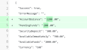
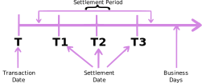
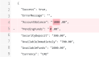
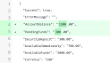
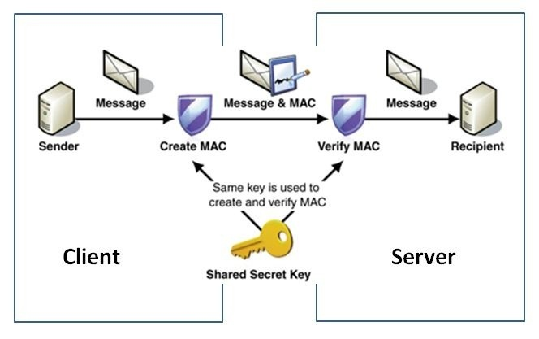

How VoPay Works
Welcome! To quickly equip you to use VoPay’s APIs, get a sense of outbound parameters with typical response structure, this guide will walk you through making real queries and post transactions to a sandbox environment.
As a summary of how VoPay works, your VoPay account can be thought to be several secure, cloud-hosted wallets.
Virtual wallet
Each currency has its own distinct wallet, hence transactions of differing currencies will fund the wallet of that currency. Your funds are available for transactions when they are transferred from a bank account into your VoPay wallet.
| Currency | Wallet | Balance |
|---|---|---|
| USD | $700.00 | |
| CAD | $1300.00 | |
| EUR | €0.00 | |
| GBP | £0.00 |
Funds flow diagram
Consider the two wallets from the above section: $1,300 CAD, $700 USD. In this case, attempting to make an electronic funds transfer of $1,500 CAD would fail.

This situation can be remedied by funding your wallet in your target currency prior to the transaction.

Fundamentals
VoPay authenticates, validates, and checks your request for possible duplication (to accomplish idempotency).
Now you will learn how to provide the authenticating information for every request.
Authentication
You will use the account ID, API key and a signature to authenticate each API request.
To generate the signature, concatenate your API key and shared secret together with the current date, then hash the result using SHA1.

Generating your signature
You will need to compute a signature from your VoPay credentials to authenticate every request you make.
By example, here is a shared secret and an API key with a current date:


3da541559918a808c2402bba5012f6c60b27661c
OTEyZWM4MDNiMmNINDk=
2022-02-08

Hashing the above string will produce the following signature:
| Algorithm | Hash |
|---|---|
| SHA1 | f69fe6fbd81b9008fbcc0ebdac5fc7a47e3beacf |
SHA1 hash of the key, shared secret, formatted date ⇾ signature
# $KEY = "3da541559918a808c2402bba5012f6c60b27661c"
# $SECRET = "OTEyZWM4MDNiMmNINDk="
$AccountID = "alice.smith"
# Securely read the credentials from the user
$Credentials = @{};
foreach($cred in @("Key","Shared Secret")){
$Credentials.Add( $cred, (Get-Credential -Message $cred -Title "VoPay Credentials" -UserName $AccountId) )
}
$FormattedDate = Get-Date -Format "yyyy-MM-dd"
# $PreSig = $KEY + $SECRET + $FormattedDate
$PreSig = ($Credentials.Key.Password | ConvertFrom-SecureString -AsPlainText) + ($Credentials.'Shared Secret'.Password | ConvertFrom-SecureString -AsPlainText) + $FormattedDate
<# Now perform a SHA1 cryptographic hash #>
# First convert the concatenated string into a binary representation.
$PreSigChars = $PreSig.ToCharArray()
$PreSigBytes = $PreSigChars | ForEach-Object { [System.Convert]::ToByte($_) }
$PreSigStream = [IO.MemoryStream]::new($PreSigBytes)
# Then, you pass that to a hashing function.
$Hash = Get-FileHash -InputStream $PreSigStream -Algorithm SHA1
$Signature = $Hash.Hash.ToLowerInvariant()
# readonly KEY="3da541559918a808c2402bba5012f6c60b27661c"
# readonly SECRET="OTEyZWM4MDNiMmNINDk="
readonly ACCOUNT_ID="alice.smith"
# Securely read the credentials from the user
readonly KEY=$(pass "$ACCOUNT_ID:key")
readonly SECRET=$(pass "$ACCOUNT_ID:secret")
# Format the date
formatted_date=$(date +%Y-%m-%d)
signature=$(echo -n $KEY$SECRET$formatted_date | sha1sum | awk '{print $1}')
# KEY = "3da541559918a808c2402bba5012f6c60b27661c"
# SECRET = "OTEyZWM4MDNiMmNINDk="
ACCOUNT_ID = "alice.smith"
# Securely read the credentials from the user
KEY = getpass("Enter your VoPay API key: ")
SECRET = getpass("Enter your VoPay shared secret: ")
formatted_date = datetime.datetime.now().strftime("%Y-%m-%d")
pre_sig = KEY + SECRET + formatted_date
signature = hashlib.sha1(pre_sig.encode('utf-8')).hexdigest() # import hashlib
const KEY = "3da541559918a808c2402bba5012f6c60b27661c"
const SECRET = "OTEyZWM4MDNiMmNINDk="
const ACCOUNT_ID = "alice.smith"
var formattedDate = new Date().toISOString().slice(0,10)
var preSig = KEY + SECRET + formattedDate
var signature = crypto.createHash('sha1').update(preSig).digest('hex')
KEY = "3da541559918a808c2402bba5012f6c60b27661c"
SECRET = "OTEyZWM4MDNiMmNINDk="
ACCOUNT_ID = "alice.smith"
formatted_date = Date.today.strftime("%Y-%m-%d")
pre_sig = KEY + SECRET + formatted_date
signature = Digest::SHA1.hexdigest(pre_sig)
$KEY = "3da541559918a808c2402bba5012f6c60b27661c"
$SECRET = "OTEyZWM4MDNiMmNINDk="
$ACCOUNT_ID = "alice.smith"
$formattedDate = date("Y-m-d")
$preSig = $KEY + $SECRET + $formattedDate
signature = hash('sha1', preSig)
// Using statements, class setup, main function omitted for brevity
const KEY = "3da541559918a808c2402bba5012f6c60b27661c"
const SECRET = "OTEyZWM4MDNiMmNINDk="
const ACCOUNT_ID = "alice.smith"
// See note on secure strings: https://github.com/dotnet/platform-compat/blob/master/docs/DE0001.md
var formatted_date = DateTime.Now.ToString("yyyy-MM-dd")
var preSig = KEY + SECRET + formatted_date
var signature = SHA1.Create().ComputeHash(Encoding.UTF8.GetBytes(preSig)).ToHexString();
// Import statements, class setup, main function omitted for brevity
static final String KEY = "3da541559918a808c2402bba5012f6c60b27661c";
static final String SECRET = "OTEyZWM4MDNiMmNINDk=";
String formattedDate = new SimpleDateFormat("yyyy-MM-dd").format(new Date()); // import java.text.SimpleDateFormat
String preSig = KEY + SECRET + formattedDate;
String signature = MessageDigest.getInstance("SHA-1").digest(preSig.getBytes("UTF-8")).toHexString(); // import java.security.MessageDigest;
// Import statements and main function omitted for brevity
const KEY = "3da541559918a808c2402bba5012f6c60b27661c"
const SECRET = "OTEyZWM4MDNiMmNINDk="
var formatted_date = time.Now().Format("2006-01-02")
var pre_sig = KEY + SECRET + formatted_date
var signature = fmt.Sprintf("%x", sha1.Sum([]byte(pre_sig))) // import "crypto/sha1"
Later, you will use the signature to receive sandbox data from VoPay.
Response Readiness
Your application needs to be able to send well-formed calls and process successful, flagged, and failed responses.
- Successful only means the transaction was sent to the bank for processing (poll or webhook to know if it clears).
- Flagged means the transaction is temporarily held for your review (see clearing flags).
- Failed means the transaction reached an unrecoverable conclusion (see failure reasons).
Input validation
VoPay performs format checks to ensure the data you provided is valid and can be processed. Calls that are not well-formed will return an error.
Example valid input
The Postman collection provides examples of valid input for each field.
API Responses
Correspondingly, your solution should anticipate and process responses to both successful and unsuccessful API calls and transaction requests.

Successful calls to the API may not necessarily produce successful transactions (see When do transactions fail?). Successful calls can be identified by "true" in the Success field (and "" in ErrorMessage); conversely, a Success response of "false"indicates that there will be important information in the ErrorMessage. Unsuccessful transactions will show "failed" in the TransactionStatus field.
See the API specification for a complete enumeration of responses for each call.
Idempotent requests
To ensure you can safely retry requests without accidentally performing the same operation twice, all of our transaction endpoints support idempotency. API idempotency is useful in case your requests are disrupted in transit or you otherwise fail to receive a response.
For example, if a request to the EFT Fund endpoint does not respond due to a network connection error, you can retry the FUND request with the same idempotency key, thereby guaranteeing that not more than one funding transaction will have been created.

An idempotency key is a unique key of your choosing which the server can use to recognize and reject subsequent retries of the same request. To perform an idempotent request, provide an IdempotencyKey in the body of the POST request.
Checking your VoPay balance
GET account/balance
Now you will use your signature to receive information from the sandbox. Routinely checking your balance before submitting any transaction is best practice, which this guide henceforth follows.
To do this, you need only your account ID, API key, and signature.
Query Parameters
| Field | Data Type | Description | Necessity |
|---|---|---|---|
AccountID |
string |
Your account ID | required |
Key |
string |
API key for the account | required |
Signature |
string |
Hashed signature for the request | required |
Currency |
string |
ISO 4217 3-character code for currency of transactions to fetch. Defaults to the wallet’s local currency (CAD) |
optional |
Invoke-RestMethod -Method Get -Uri "https://earthnode-dev.vopay.com/api/v2/account/balance?AccountID=$AccountID&Key=$($Credentials.Key.Password | ConvertFrom-SecureString -AsPlainText)&Signature=$($Signature.Hash.ToLowerInvariant())&Currency=CAD"
account_id="alice.smith"
curl -s -X GET "https://earthnode-dev.vopay.com/api/v2/account/balance?AccountID=$account_id&Key=$KEY&Signature=$signature&Currency=CAD"
account_id="alice.smith"
r = requests.get("https://earthnode-dev.vopay.com/api/v2/account/balance?AccountID=%s&Key=%s&Signature=%s&Currency=CAD" % (account_id, KEY, signature))
The result
{
"Success": true,
"ErrorMessage": "",
"AccountBalance": "3000.00",
"PendingFunds": "700.00",
"SecurityDeposit": "1000.00",
"AvailableFunds": "1300.00",
"Currency": "CAD"
}
The response explained
A closer look at the response from the API:
| Field | Data Type | Description |
|---|---|---|
Success |
boolean |
true when request successful, false when failed |
ErrorMessage |
string |
Contains a description of the error if the request failed |
AccountBalance |
number |
Indicates the total current account balance, including pending funds. |
PendingFunds |
number |
Indicates the portion of the account balance which is pending due to in-progress EFT transactions. |
SecurityDeposit |
number |
Indicates the portion of the account balance which is being held as a security deposit against returned or fraudulent transactions. |
AvailableFunds |
number |
Indicates the portion of the account balance which is currently available for use. This is calculated AccountBalance - (PendingFunds + SecurityDeposit). |
Currency |
string |
3 character currency code for the balance being returned. |
The first step to getting a positive balance is to fund your wallet.
Funding your VoPay wallet
There are two primary methods to move funds into your VoPay wallet.
Electronic Funds Transfer (EFT) Fund
POST /eft/fund
To fund your VoPay account by EFT, you will deposit funds into your wallet — like depositing a cheque. Minimally, this requires providing the deposit amount, payee name, payee’s address, and payee’s bank info: institution, transit, account number (ITA).
| Parameter | Type | Description |
|---|---|---|
Amount |
number |
The amount to debit from the customer’s bank account. |
FirstName |
string |
The first name of the payee. |
LastName |
string |
The last name of the payee. |
Address1 |
string |
The street address of the payee. |
City |
string |
The city of the payee. |
Province |
string |
Two-character abbreviated province of the payee (e.g., ON, BC, AB). |
PostalCode |
string |
The postal code of the payee. |
Country |
string |
Full or ISO 3166-1 two-character abbreviated country of the payee (e.g., CA, US). |
FinancialInstitutionNumber |
integer |
The institution number of the payee’s bank. |
BranchTransitNumber |
integer |
The transit number of the payee’s bank. |
AccountNumber |
integer |
The payee’s bank account number. |
For example, to deposit $200 into your VoPay wallet, you would POST to /eft/fund with the following parameters:
Query Parameters
{
"Amount": 200.00,
"LastName": "Smith",
"FirstName": "Alice",
"FinancialInstitutionNumber": "000",
"BranchTransitNumber": 12345,
"AccountNumber": 123456,
"Address1": "123 Main St.",
"City": "Vancouver",
"Province": "BC",
"PostalCode": "V1A 1A1",
"Country": "CA"
}
Post $2,000 to your VoPay wallet using EFT
<!-- CODE SNIPPET HERE -->
The following is a typical response:
{
"Success": true,
"ErrorMessage": "",
"TransactionID": "436749",
"Iq11": "0"
}
In your solution, be sure to record the TransactionID you receive. You will need it to make future API calls on the transaction (e.g., getting status, cancelling, unflagging, etc.).
Check your balance to verify the transaction.
Invoke-RestMethod -Method Get -Uri "https://earthnode-dev.vopay.com/api/v2/account/balance?AccountID=$AccountID&Key=$($Credentials.Key.Password | ConvertFrom-SecureString -AsPlainText)&Signature=$($Signature.Hash.ToLowerInvariant())&Currency=CAD"
The change:
| Before | After |
|---|---|
|  |
The account balance has increased by $200.00. The same amount can be seen in the pending balance. This will be the case until the transaction settles.

Funding transactions settle at midnight after 3 business days. A transaction submitted on Monday at 2 PM, for example, will settle at 11:59 PM EST on Thursday.
Interac money request
POST /interac/money-request
To fund by Interac money request, you need only a recipient name, email address, and amount.
For example, to request $300.00 from John Doe:
{
"RecipientName": "John Doe",
"Email": "john.doe@hotmail.com",
"Amount": 3000.00
}
$Endpoint = "interac/money-request"
$InteracMoneyRequest = @{
Amount=3000.00;
Email="john.doe@hotmail.com";
RecipientName="John Doe"
}
Invoke-RestMethod -Method Post -Uri "https://earthnode-dev.vopay.com/api/v2/$Endpoint?AccountID=$AccountID&Key=$($Credentials.Key.Password | ConvertFrom-SecureString -AsPlainText)&Signature=$($Signature.Hash.ToLowerInvariant())&Currency=CAD" -Body $InteracMoneyRequest | ConvertTo-Json
declare -A InteracMoneyRequest=(
[Amount]=3000.00
[Email]="john.doe@gmail.com"
[RecipientName]="John Doe"
)
curl -X POST -H "Content-Type: application/json" -d "$(jq -n "$InteracMoneyRequest")" "https://earthnode-dev.vopay.com/api/v2/interac/money-request?AccountID=$account_id&Key=$KEY&Signature=$signature&Currency=CAD"
InteracMoneyRequest = {
Amount: 3000.00,
Email: "john.doe@gmail.com"
RecipientName: "John Doe"
}
r = requests.post("https://earthnode-dev.vopay.com/api/v2/interac/money-request?AccountID=%s&Key=%s&Signature=%s&Currency=CAD" % [account_id, KEY, signature], json: InteracMoneyRequest)
InteracMoneyRequest = {
"Amount": 3000.00,
"Email": "john.doe@gmail.com",
"RecipientName": "John Doe"
}
r = requests.post("https://earthnode-dev.vopay.com/api/v2/interac/money-request?AccountID=%s&Key=%s&Signature=%s&Currency=CAD" % [account_id, KEY, signature], json: InteracMoneyRequest)
$InteracMoneyRequest = array(
"Amount" => 3000.00,
"Email" => "john.doe@gmail.com",
"RecipientName" => "John Doe"
)
r = requests.post("https://earthnode-dev.vopay.com/api/v2/interac/money-request?AccountID=%s&Key=%s&Signature=%s&Currency=CAD" % [account_id, KEY, signature], json: $InteracMoneyRequest)
var InteracMoneyRequest = new Dictionary<string, object>
{
["Amount"] = 3000.00,
["Email"] = "john.doe@gmail.com",
["RecipientName"] = "John Doe"
};
r = await client.PostAsync("https://earthnode-dev.vopay.com/api/v2/interac/money-request?AccountID=%s&Key=%s&Signature=%s&Currency=CAD" % [account_id, KEY, signature], new StringContent(JsonConvert.SerializeObject(InteracMoneyRequest), Encoding.UTF8, "application/json"));
The result:
{
"Success": true,
"ErrorMessage": "",
"TransactionID": "437073",
"TransactionStatus": "requested",
"Flagged": null
}
Here, you see the account balance and pending funds increased by the amount you requested ($300 in the example):
| Before | After |
|---|---|
|  |  |
Interac transactions are processed nearly in real-time, meaning the request email is sent out to recipients right away.
Once the request is accepted by the recipient, the funds are made available in your account.
Sending money from your VoPay wallet
There are two primary methods to send money from your VoPay wallet. Later, this guide introduces more advanced means of sending funds.
EFT Withdraw
POST /eft/withdraw
Sending money by EFT is like writing someone a cheque. As with eft/fund, to send by electronic funds transfer, you will need a recipient’s name, recipient’s address, amount, and the recipient’s ITA information.
$Endpoint="eft/withdraw"
$Body = @{
Amount=5000.00;
FirstName="Adam";
LastName="Smith";
AccountNumber=123456;
FinancialInstitutionNumber="000";
BranchTransitNumber=12345;
Address1="123 Main St.";
City="Vancouver";
Province="BC";
Country="CA";
PostalCode="V1A 1A1";
}
Invoke-RestMethod -Method Post -Uri "https://earthnode-dev.vopay.com/api/v2/${Endpoint}?AccountID=$AccountID&Key=$($Credentials.Key.Password | ConvertFrom-SecureString -AsPlainText)&Signature=$($Signature.Hash.ToLowerInvariant())&Currency=CAD" -Body $Body
A typical response:
{
"Success": True,
"ErrorMessage": ,
"TransactionID": 437087,
"Iq11": 0,
}
If you check the balance now, you will seeAccountBalance and AvailableFunds decrease by the amount withdrawn.
{
"Success": true,
"ErrorMessage": "",
"AccountBalance": PreviousAccountBalance - WithdrawnAmount,
"PendingFunds": "0.00",
"SecurityDeposit": "5000.00",
"AvailableFunds": PreviousAccountBalance - WithdrawnAmount,
"Currency": "CAD"
}
The withdrawal will be marked as successful at midnight EST on the day the withdrawal was submitted. For example, a withdrawal performed at 2 PM on Monday will be marked as successful at 11:59 PM EST on Monday.

Interac e-transfer
POST /interac/bulk-payout
Sending an Interac e-transfer is the familiar process of sending money to another person by email or SMS. To send by Interac, you will need a recipient’s name (or cellphone number), recipient’s email address, amount to send, and the security question/answer you want the recipient to answer.
$Endpoint = "interac/bulk-payout"
$Body = @{
Amount=1000.00;
RecipientName="Samuel Adams";
Question="Why?";
Answer="Why not";
EmailAddress="samuel.adams@yahoo.ca"
}
Invoke-RestMethod -Method Post -Uri "https://earthnode-dev.vopay.com/api/v2/${Endpoint}?AccountID=$AccountID&Key=$($Credentials.Key.Password | ConvertFrom-SecureString -AsPlainText)&Signature=$($Signature.Hash.ToLowerInvariant())&Currency=CAD" -Body $Body
A successful Interac e-transfer will return the following response:
{
"Success": true,
"ErrorMessage": "",
"TransactionID": "437093",
"TransactionConfirmed": true
}
As in EFT withdraw, AccountBalance and AvailableFunds decrease by the amount sent if the balance is queried.
{
"Success": true,
"ErrorMessage": "",
"AccountBalance": PreviousAccountBalance - Amount,
"PendingFunds": "0.00",
"SecurityDeposit": "5000.00",
"AvailableFunds": PreviousAvailableFunds - Amount,
"Currency": "CAD"
}
Interac e-transfer transactions are executed in real-time, practically.
A transaction will be marked as successful once the recipient accepts the e-transfer.
The Transaction lifecycle
From submission to settlement, each transaction is processed in a sequence of steps. The current state of any transaction is captured by the TransactionStatus attribute. Below you can find the typical status progression per transaction type.
EFTs
| Status | Meaning |
|---|---|
| Pending | The transaction starts in the Pending state when it is submitted. This is the initial state for every transaction. |
| In Progress | When the transaction is submitted to the bank, it is moved to the In Progress state. |
| Successful | When the transaction is settled and the funds have cleared, it is moved to the Successful state. |
Interac Money Request
| Status | Meaning |
|---|---|
| Pending | When submitted, the transaction starts in the Pending state. |
| Sent | When the transaction is submitted to the recipient (payee), it is moved to the In Progress state. |
| Successful | When the recipient accepts the money request, the transaction is moved to the Successful state. |
Interac e-Transfer
| Status | Meaning |
|---|---|
| Pending | When submitted, the transaction starts in the Pending state. |
| Requested | When an email has been sent to funds recipient, it is moved to the In Progress state. |
| Successful | When the recipient accepts the e-transfer, the transaction is moved to the Successful state. |
Polling for transaction statuses
One technique for tracking changes in transaction status is to poll (intermittently query) the transaction status endpoint.
GET /account/transactions
Minimally, this query requires the following parameters:
| Parameter | Type | Description |
|---|---|---|
StartDateTime |
string |
Return transactions that occurred on or after this date/time. Can be specified in either YYYY-MM-DD HH:MM:SS or YYYY-MM-DD format. |
EndDateTime |
string |
Return transactions that occurred on or before this date/time. Can be specified in either YYYY-MM-DD HH:MM:SS or YYYY-MM-DD format. |
Additional filters may be specified by adding optional query parameters as follows:
| Parameter | Type | Description |
|---|---|---|
Currency |
string |
3-character ISO 4217 currency code of transactions to return. Defaults to the wallet’s local currency. |
TransactionType |
string |
Specifies the type of transaction(s) to return. Accepted values are: ‘EFT Funding’, ‘EFT Withdrawal’, ‘Interac Money Request’, ‘Interac Bulk Payout’, ‘Credit Card’, ‘Fee’, ‘Reversal’. |
TransactionID |
integer |
Searches for a transaction with the specified ID, including any related child transactions which may exist. |
ClientReferenceNumber |
string |
Returns transactions with the specified client reference number. |
ScheduledTransactionID |
string |
Id of the scheduled transaction to find |
IsFlagged |
boolean |
Only return transactions that have a flag status unconfirmed by the client. |
IsRefunded |
boolean |
Only return transactions that have been refunded. |
Workflow
A typical polling workflow to track transaction status changes might utilize a cron service to iterate over the list of transaction IDs, making a GET request to /account/transactions for each ID.
Response Schema
The returned Transactions object is a zero-indexed hash-table of transactions with NumberOfRecords total number of records. Here is a sample response (truncated with /*[…]*/ for legibility):
{
"Success": true,
"ErrorMessage": "",
"NumberOfRecords": 343,
"Transactions": {
"0": {
"TransactionID": "442121",
"TransactionDateTime": "2022-02-16 06:48:48",
"TransactionType": "EFT Funding",
"TransactionStatus": "pending",
"Notes": "",
"DebitAmount": "0.00",
"CreditAmount": "10.00",
"Currency": "CAD",
"HoldAmount": "10.00",
"LastModified": "2022-02-16 06:48:48",
"ParentTransactionID": "",
"ChildTransactionIDs": "",
"ClientReferenceNumber": "",
"ScheduledTransactionID": "",
"ClientAccountID": "",
"TransactionErrorCode": "",
"TransactionFailureReason": "",
"TransactionFlag": "@{0=duplicate - 442097,442119,442121}",
"PaylinkRequestID": "",
"IsRefunded": false,
"FullName": "John Doe"
},
"1": {
"TransactionID": "442119",
/* […] */
"TransactionFlag": "@{0=duplicate - 442097,442119,442121}",
"PaylinkRequestID": "",
"IsRefunded": false,
"FullName": "John Doe"
},
"2": {
"TransactionID": "442097",
/* […] */
"FullName": "John Doe"
},
"3": {
"TransactionID": "436696",
/* […] */
"FullName": "John Doe"
},
/* […] */
"340": {
"TransactionID": "418677",
/* […] */
"FullName": "John Doe"
},
"341": {
"TransactionID": "413330",
/* […] */
"FullName": "John Doe"
},
"342": {
"TransactionID": "413322",
/* […] */
"FullName": "John Doe"
}
}
}
Webhook notifications
Alternatively, you can receive a push notification when a transaction changes status by setting up a webhook. VoPay will send a POST request to the endpoint you specify containing details of a transaction’s status change.
POST /account/webhook-url
To set up a webhook, you will need to provide the URL of the webhook.
| Parameter | Type | Description |
|---|---|---|
WebHookUrl |
string |
Endpoint where you want notifications sent. Must be a valid URL. |
When a transaction changes status, you will receive the status change details as JSON in a POST request to the URL you provided.
The payload will match the following structure:
{
"Success": true,
"TransactionType": "Interac Bulk Payout",
"TransactionID": 46166,
"TransactionAmount": "17887.00",
"Status": "failed",
"UpdatedAt": "2022-02-16 09:45:19",
"ValidationKey": "ab18ccf2e3cebd5add2c3789f3cf8cb50679f70a",
"FailureReason": "901 - NSF"
}

The ValidationKey refers to the SHA1 hash of your API shared secret and the TransactionID in the payload. This serves a dual purpose of establishing the authenticity of the message (origin trust) and verifying the data integrity of the payload (content fidelity).
To check if your webhook receiver is operational, send a GET request to /account/webhook-url-test. The Success field will be true (and ErrorMessage empty) if the data has been sent to your receiver.
Scheduling Transactions
Transactions can be programmatically scheduled to run at a specific (future) time, or to run on a regular schedule. This is where the advantage of API access becomes the most evident.
For now, you will learn how EFT transactions can be scheduled.
Scheduling one-time payments
One-time future funding or funding can be scheduled using the /eft/fund/schedule or /eft/withdraw/schedule endpoints, respectively.
These each have essentially the same function as the /eft/fund and /eft/withdraw endpoints, but the scheduler creates transactions on the specified dates.
POST /eft/fund/schedule
For scheduling one-time EFT fund transactions or one-time EFT withdrawals, the following are the minimally required parameters:
| Parameter | Type | Description |
|---|---|---|
Amount |
number |
The amount to be funded |
Frequency |
string |
How often: single or recurring. For one-time funding, you will indicate single. |
ScheduleStartDate |
string |
Date to post the transaction. |
POST /eft/withdraw/schedule
Scheduling recurring payments
POST /eft/fund/schedule
POST /eft/withdraw/schedule
The same endpoints may be used to schedule recurring inbound or outbound transactions.
Again, these have the same effect as /eft/fund and /eft/withdraw respectively, but with recurrence specifications. To achieve this, the following parameters are required:
| Parameter | Type | Description |
|---|---|---|
Frequency |
string |
How often the transaction is re-posted: single or recurring. |
NameOfFrequency |
string |
The recurrence periodicity: weekly, biweekly, semi-monthly, monthly, bimonthly, 3 months, 6 months, yearly |
ScheduleStartDate |
string |
Date on which the transactions will be started. |
ScheduleEndDate |
string |
Date on which the transactions will be ended (only if EndingAfterPayments is not specified). |
EndingAfterPayments |
integer |
Number of payments after which the transactions will be ended (only ScheduleEndDate is not specified). |
Scheduling an auto-balance transfer
POST /account/auto-balance-transfer
This endpoint allows you to schedule an auto-balance transfer (one-time or recurring) from your VoPay wallet to a bank account. This will regularly liquidate your entire balance so that your funds remain accessible to other services attached to your bank account.
To use this, you must indicate the frequency and the minimum amount available to check for a transfer. For example, you can choose to make a full balance transfer only when available funds exceed $100 in your wallet’s currency.
The following are the minimally required parameters for this endpoint:
| Parameter | Type | Description |
|---|---|---|
ScheduleStartDate |
string |
Date from which the transfer schedule will begin |
AutoBalanceTransferAmount |
number |
The minimum amount to have in your VoPay account to initiate a scheduled transfer. |
TypeOfFrequency |
string |
Periodicity in which to receive the transfer: daily, weekly, biweekly, monthly |
Aliasing Sensitive Data
Instead of supplying ITA details every time you issue EFTs, you can request a persistent token that authorizes current/future transactions. This simplifies your auth flow and minimizes the number of sensitive data in the requests.
If the customer authorizes using the bank’s web login (vetted), an iQ11 token also allows you to avoid non-sufficient funds failures for that customer. Instead, VoPay will gracefully fail any transaction lacking sufficient funds before it reaches the bank. See the section on NSF’s for more details.
Overview of Token Use Cases
If you already have your customers’ ITA information, you can submit that in exchange for an iQ11 token. Thereafter, the token can be used in lieu of ITA for transactions.
If you don’t already have the ITA, you can either invite your customer to provide their banking info through VoPay’s secure web interface; or, you can embed this interface as a step within your solution. Then you would receive an associated iQ11 token when your customer uses this interface to enter ITA or authenticate with their bank.
The guide will elaborate on each of the above approaches.
Manually generating a token
You can generate an iQ11 token manually by providing your customers’ ITA information to the tokenize endpoint.
POST /iq11/tokenize
The following iQ11 parameters are required for Canadian banks:
| Parameter | Type | Description |
|---|---|---|
AccountHolderName |
string |
Account holder’s full name. |
AccountNumber |
string |
Customer’s bank account number for funds to be debited from. |
FinancialInstitutionNumber |
string |
Three digit institution number for a Canadian bank. |
BranchTransitNumber |
string |
Transit number for the customer’s account. |
The generated token can now be used instead of ITA in all the EFT transaction endpoints discussed earlier. For example, with POST eft/fund, you can now provide a single Token parameter instead of AccountHolderName, AccountNumber, FinancialInstitutionNumber, and BranchTransitNumber. Here is the new query string:
Token via Customer Login
POST /iq11/generate-embed-url
This endpoint generates a distributable user interface you can deploy to collect your customers’ ITA information. To use it, note the EmbedURL field in the response payload when you query /iq11/generate-embed-url.
This URL, uniquely associated to connect with your wallet, will look like https://earthnode-dev.vopay.com/iq11/embed/<UNIQUE_IDENTIFIER> with a 40-char <UNIQUE_IDENTIFIER>. You can embed the UI in your own solution using an iframe or object, as in this example (adapt dimensions to your needs):
<iframe src="https://earthnode.vopay.com/iq11/embed/a3c6bb45f2fc02478cb900bf9d3e11264b356105" width="100%" height="500px" frameborder="0" scrolling="no"></iframe>
Embed Options
The embedded iframe or object can allow your customers to authorize with their bank through the bank’s interface (vetted login using their online banking credentials); or, identify their bank and then provide an account number.
When you call the /iq11/generate-embed-url endpoint, you can specify the following options:
| Parameter | Type | Description |
|---|---|---|
Language |
string |
en (English) or fr (French). Default: en |
AccountSelectionMethod |
string |
This parameter accepts any, online and manual. Default: any. |
RedirectMethod |
string |
This parameter accepts InnerRedirect, OuterRedirect, and JavascriptMessage as parameter values. |
RedirectURL |
string |
URL to redirect to after the customer logs in to their online banking account. The bank account token will be passed as a URL query param, as in the example https://example.com/page?Token= |
Version |
string |
The newer v2 allows account selection, whereas v1 uses online only. |
Below, a closer look at the last five parameters.
AccountSelectionMethod
By varying AccountSelectionMethod, your solution can either restrict customers to one of the above account-access provision methods (online or manual) or allow them the freedom to choose (any). Here is an elaboration:
AccountSelectionMethod choice |
How a customer provides access to their account |
|---|---|
online |
Directly authorizes using their bank’s login. |
manual |
Chooses a bank (which pulls up institution and transit info), then manually inputs account number. |
any |
Allows the customer to select an account from any bank. |
RedirectMethod and RedirectURL
How do you want your solution to process access authorization?
RedirectMethod choice |
After account access submission |
|---|---|
InnerRedirect |
The embedded context alone redirects to RedirectURL |
OuterRedirect |
The parent context redirects to RedirectURL |
JavascriptMessage |
The iframe posts a message received by the parent’s callback function by addEventListener. |
If you want to redirect, then you must provide a URL to redirect to. The iQ11 token will be encoded in a query parameter Token=<IQ11TOKEN> of the URL, for example:https://example.com?Token=8wcscwkwc4wo4wsgcgss4kswcg0s48cc4ow4wgg8cw0og48csswko4ww0088g4c4
To use JavascriptMessage, in your solution, you implement a callback function for the MessageEvent your embed produces.
A simple callback looks like this:
window.addEventListener('message', function (event) {
if (event.origin === 'https://embed.vopay.com' && event.data.Token) {
// handle iQ11 token
const iq11token = event.data.Token;
// do something with iQ11 token
});
See iq11eventhandler.js for a more complete example.
The MessageEvent.data your embed produces will look like this:
{
"Step": "LINK",
"Token": "8wcscwkwc4wo4wsgcgss4kswcg0s48cc4ow4wgg8cw0og48csswko4ww0088g4c4",
"Url": "https://example.com?Token=8wcscwkwc4wo4wsgcgss4kswcg0s48cc4ow4wgg8cw0og48csswko4ww0088g4c4",
}
Here, the Token represents the iQ11 token you can use in place of ITA to query the EFT endpoints. The Url is the URL you provided as RedirectURL with the Token as a query param.
Version
Choose v2 as the version. We are moving legacy customers away from the v1 parameter set — it will be removed in the future.
The response to your query will look like this:
{
"Success": true,
"ErrorMessage": "",
"EmbedURL": "https://embed-dev.vopay.com/f3240f2c26939f263a5e19381106229f148a830a",
"IframeKey": "f3240f2c26939f263a5e19381106229f148a830a"
}
The user interface your customers will use to permit access to their accounts is provisioned for you at the EmbedURL.
Paylink Invitation
A third method to acquire an iQ11 token is to use Paylink to request your customer’s ITA or banking authorization. Your customer will receive an email inviting them to provide you their banking info using VoPay’s secure graphical user interface; then, you receive an iQ11 token when they login to their bank (or, when they manually enter their ITA).
Requesting banking info via Paylink
There are three steps to using Paylink to request your customers provide their ITA banking info, aliased as iQ11 tokens.
First, query POST at /iq11/generate-embed-url to set the options for the graphical web interface in which your customer will provide their ITA. You already learned this in the Embed Options section. The response contains an IframeKey you will deploy in the next step — when you trigger sending the email.
POST /eft/pay-link/beneficiary
Then, send POST to the /eft/pay-link/beneficiary endpoint to actually send the email to the customer. This email will contain a link to the VoPay graphical user interface you provisioned above.
A representative response:
{
"Success": true,
"ErrorMessage": "",
"PaylinkRequestID": "4786",
"FirstName": "Susan",
"LastName": "Smith",
"Link": "https://request.vopay.com/f515eec8739155552ea4a56f80e5edc0cdb13303",
"Status": "pending",
"ReceiverEmailAddress": "susan.smith@elpmaxe.moc",
"SenderEmailAddress": "alice.algonquin@example.com",
"Note": "SDD",
"SenderName": "Alice Algonquin",
"ClientReferenceNumber": "012345"
}
GET /eft/pay-link
Lastly, at any point after the customer provides their banking info as ITA or vetted banking login, you will either collect the iQ11 token by reading the Token query param on the URL; or else, poll the /eft/pay-link endpoint to get the iQ11 token.
A representative response:
{
"Success": true,
"ErrorMessage": "",
"PaylinkRequests": {
"0": {
"PaylinkRequestID": "4786",
"FirstName": "Susan",
"LastName": "Smith",
"ReceiverEmailAddress": "susan.smith@elpmaxe.moc",
"SenderName": "Alice Algonquin",
"SenderEmailAddress": "alice.algonquin@example.com",
"Status": "completed",
"RequestDate": "2022-02-24 21:53:40",
"Link": "https://request.vopay.com/f515eec8739155552ea4a56f80e5edc0cdb13303",
"Token": "gssoog04oo4kcwo0w8sk0wwwsckcks0og4gwwggkwccwcwcs88sow4ocowc4gwck",
"Note": "SDD",
"ClientReferenceNumber": "012345",
"Amount": "",
"Currency": "",
"TransactionID": "",
"ScheduledPaymentsID": "",
"TransactionType": "",
"PaylinkRequestType": "Beneficiary",
"Institution": "VOPAY TESTING BANK",
"FinancialInstitutionNumber": "999",
"BranchTransitNumber": "99999",
"AccountNumber": "*****9999"
}
}
}
Then you can use the token for all future EFT transactions for that customer.
Troubleshooting
If you find transactions flagged, failing, or you otherwise have trouble querying, you may be having one of these common problems.
When do transactions fail?
Transactions can fail in VoPay or they can fail at the bank. As discussed earlier, transactions that VoPay sends to the bank will immediately produce a TransactionID for you in their response. If you fail to receive a TransactionID for a requested transaction, it means VoPay is unable to send that transaction to the bank and a failure reason will appear in the ErrorMessage.
Invalid Account info
If you make a valid transaction request (you receive a TransactionID) with invalid account info (the provided ITA is incorrect or erroneous), the bank will fail the transaction. The bank will return an error message in its eventual response to VoPay. The turnaround for this invalid ITA ranges from twenty-minutes to a few hours.
To avoid this, you should either use iQ11 tokens in lieu of ITA or else always check that you are supplying the correct institution number, transit number, and account number for your intended transactions.
Common errors
The following is a list of errors that can occur when submitting a transaction request.
| Error Message | Description | Solutions |
|---|---|---|
This Account is invalid or inactive. Please try again |
The account is not yet activated, is in a pending status, or the AccountID field was left empty |
Activate your account |
Unauthorized IP(s). Please contact VoPay business team at business@vopay.com |
Attempt to make a request on a production endpoint from an unrecognized device | Contact VoPay business team |
Invalid Login. Please provide the required parameters |
The AccountID, Key or Signature fields were incorrect or left empty |
See authentication |
Available fund is insufficient |
The wallet does not have funds available sufficient to complete the transaction | Contact VoPay business team |
This operation is not currently enabled for your account. Please contact VoPay business team at business@vopay.com |
The account does not have permission to perform the requested action (e.g., exceeded quota/rate limits) | Contact VoPay business team |
The above errors indicate a problem immediately provided in the response — deferred errors can occur when the bank must notify you of the problem. The latter (deferred) errors will show in your webhook notifications or when you check the status of your transaction.
Flagged transactions
To guard against unintended or suspicious transfers, we notify customers when we receive certain transactions requests. These transactions are flagged pending review by the customer. Choosing to clear the flag permits the transaction.
Duplicate EFT Transactions
We will flag an EFT transaction as a potential duplicate EFT having these conditions:
- Within 3 hours of the original fund/withdraw transaction, another fund/withdraw having the same
- Name
- Bank account
- Amount
- Currency
Duplicate Interac Transfer
Interac transfer will be flagged as potentially duplicate payout/money-request when:
- Within 3 hours of the original transaction, another having the same
- Email address
- Amount
- Currency
Clearing the flag
As you learned in the section on status polling, you may find flagged EFT/Interac transactions by providing StartDateTime and EndDateTime (both in YYYY-MM-DD HH:MM:SS or YYYY-MM-DD format) in a GET on account/transactions. The TransactionFlag field will show the flag reason (e.g., duplicate) followed by a list correspondingly flagged transaction IDs (where applicable).
Here is a representative response:
{
"Success": true,
"ErrorMessage": "",
"NumberOfRecords": 3,
"Transactions": {
"0": {
"TransactionID": "460166",
"TransactionDateTime": "2022-02-25 00:21:33",
"TransactionType": "EFT Funding",
"TransactionStatus": "pending",
/* […] */
"TransactionFlag": {
"0": "duplicate - 460154,460160,460165,460166"
},
"PaylinkRequestID": "",
"IsRefunded": false,
"FullName": "John Doe"
},
"1": {
"TransactionID": "460165",
"TransactionDateTime": "2022-02-25 00:21:28",
"TransactionType": "EFT Funding",
"TransactionStatus": "pending",
/* […] */
"TransactionFlag": {
"0": "duplicate - 460154,460160,460165,460166"
},
"PaylinkRequestID": "",
"IsRefunded": false,
"FullName": "John Doe"
},
"2": {
"TransactionID": "460160",
"TransactionDateTime": "2022-02-25 00:18:39",
"TransactionType": "EFT Funding",
"TransactionStatus": "pending",
/* […] */
"TransactionFlag": {
"0": "duplicate - 460154,460160,460165,460166"
},
"PaylinkRequestID": "",
"IsRefunded": false,
"FullName": "John Doe"
}
}
}
POST /account/transaction/confirm
Call POST on /account/transaction/confirm with the TransactionID (integer) to clear a flagged transaction, thereby allowing it to be processed.
NSFs
Funding transactions can fail when the bank account lacks a balance sufficient to clear the transaction. When the bank attempts to draw funds for the transaction, the bank itself will fail this transaction as non-sufficient funds (NSF) .
VoPay helps you avoid NSF failures using iQ11. If you supply a vetted iQ11 token, VoPay will fail a transaction before it reaches the bank when it would have otherwise produced an NSF
NSF checks
Another advantage of using the iQ11 token is avoiding non-sufficient funds failures. When supplying a vetted iQ11 token and the bank account does not have the required funds, VoPay will fail the transaction before it reaches the bank.
Invalid Account info
If you make a valid API call with invalid account info, the bank will fail the transaction. This can happen when you provide incorrect or erroneous ITA that the endpoint does not reject. The bank will return an error message in its eventual response to VoPay.
To avoid this, you should either use iQ11 tokens in lieu of ITA or else always check that you are supplying the correct institution number, transit number, and account number for your intended transactions.
Other errors
Meta-transaction requests
Requests aimed at regulating transactions that are already pending, in progress, or completed, can be useful in a number of cases. In addition to polling for status updates, you may find need of cancelling, refunding, or clearing a transaction.
Cancel
POST /account/transaction/cancel